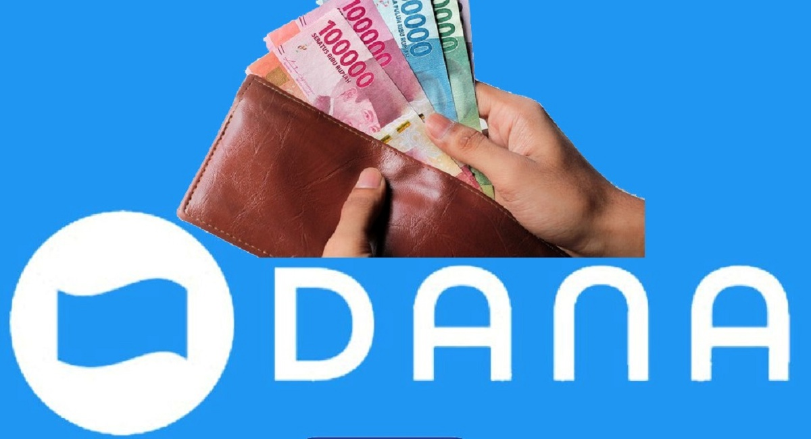

Saldo DANA Gratis Hari Ini 2025

Pengen dapetin saldo DANA gratis hari ini? Jangan sampai kelewatan! Ada banyak cara gampang buat dapetin saldo gratis yang bisa langsung kamu pakai buat belanja, bayar tagihan, atau kirim ke rekening bank.
Apa Itu Saldo DANA Gratis?
Saldo DANA gratis adalah saldo yang bisa kamu dapatkan tanpa harus top-up pakai uang sendiri. Banyak platform dan aplikasi yang ngasih reward saldo DANA buat penggunanya, entah lewat event, promo, atau misi tertentu.
Cara Mendapatkan Saldo DANA Gratis
Berikut beberapa cara efektif buat dapetin saldo DANA gratis di tahun 2025:
- 1. Pakai Aplikasi Penghasil Saldo DANA – Ada banyak aplikasi yang kasih reward saldo DANA setelah kamu menyelesaikan tugas, seperti nonton video, isi survei, atau undang teman.
- 2. Ikut Event & Giveaway – Banyak platform sosial media sering bagi-bagi saldo DANA gratis lewat event atau giveaway.
- 3. Gunakan Kode Referral – Aplikasi seperti e-wallet atau marketplace sering kasih bonus saldo buat pengguna yang ngajak teman lewat kode referral.
- 4. Dapatkan Cashback – Banyak promo cashback dari aplikasi pembayaran yang bisa langsung masuk ke saldo DANA kamu.
Keuntungan Pakai Saldo DANA
Saldo DANA bukan cuma gratis, tapi juga punya banyak manfaat:
- Transaksi lebih cepat dan simpel.
- Bisa dipakai buat belanja online, bayar tagihan, sampai transfer ke rekening bank.
- Banyak promo eksklusif yang bisa bikin pengeluaran lebih hemat.
Kesimpulan
Jangan sia-siakan kesempatan buat dapetin saldo DANA gratis di 2025! Dengan berbagai cara di atas, kamu bisa dapet saldo gratis dengan mudah. Pastikan kamu selalu update promo terbaru supaya nggak ketinggalan.
Cek Promo Sekarang!